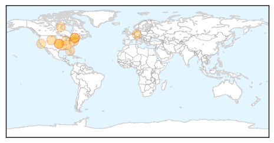

Influenza
30-Day Web Trend
0 alerts, 0 warnings

30-Day Twitter Trend
0 alerts, 0 warnings

Article Locations
Article Confidences

Top Articles:
- 0.995
- How to avoid the flu
- 0.993
- Flu Season Brings Stronger Vaccines And Revised Advice
- 0.991
- Minister Ambrose and Dr. Taylor encourage Canadians to get the flu vaccine -- STONY PLAIN, AB, Nov. 7, 2014
- 0.987
- Minister Ambrose and Dr. Taylor encourage Canadians to get the flu vaccine -- STONY PLAIN, AB, Nov. 7, 2014
- 0.980
- Health officials recommend flu, pneumonia vaccines
- 0.963
- Flu season arrives in Erie, Crawford counties
- 0.918
- Pork Producers and Public Encouraged to Get Vaccinated Against Influenza
- 0.910
- Germany reports highly pathogenic bird flu strain
- 0.891
- California's Doctors Medical Center hosts drive-thru flu shot clinic
- 0.797
- Tracking Sickness with Social Media, Internet Searches
- 0.761
- Program helps those injured by certain vaccines
- 0.684
- Maine county jail staff given flu shots by mistake
- 0.643
- Health department sets flu shot clinics
Top Tweets:
-
No tweets found for Nov 07, 2014
Dengue Fever
30-Day Web Trend
0 alerts, 0 warnings

30-Day Twitter Trend
3 alerts, 0 warnings

Article Locations

Article Confidences

Top Articles:
- 0.994
- CHP investigates third local confirmed case of dengue fever
- 0.991
- Private hospitals admitting 20 dengue cases every week, docs blame weather
- 0.987
- Dengue outbreak in Mumbai kills 12
- 0.986
- Mumbai reels under dengue, NMMC claims disease not out of control yet
- 0.933
- Dengue claims Mumbai’s 5th victim in 7 days
- 0.917
- 12-year-old girl succumbs to dengue in Pimpri Chinchwad
- 0.857
- World's First Dengue Vaccine Likely By 2015, Says Sanofi
- 0.687
- 147 CHIKV cases in Trinidad, 14 in Tobago
- 0.644
- Scientists recruit mosquitoes to help fight dengue
Top Tweets:
-
No tweets found for Nov 07, 2014